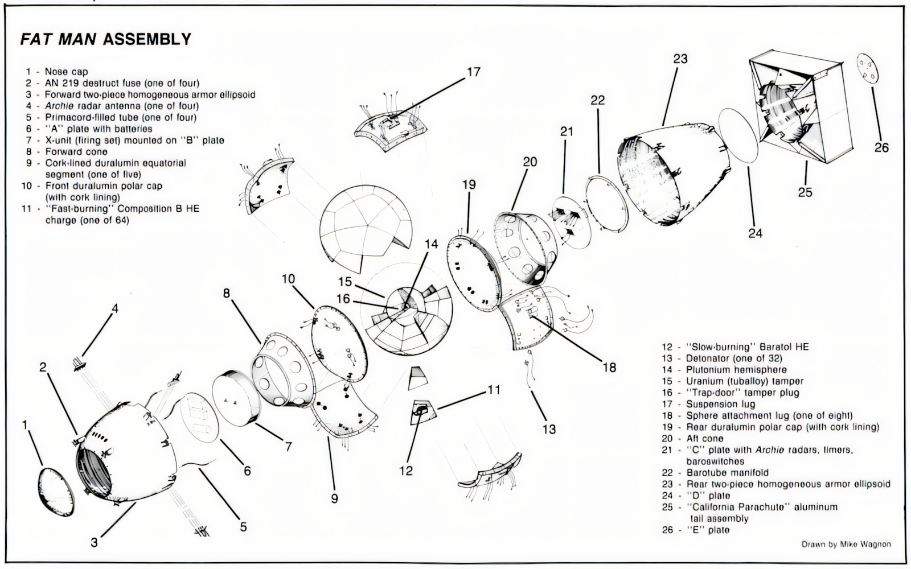
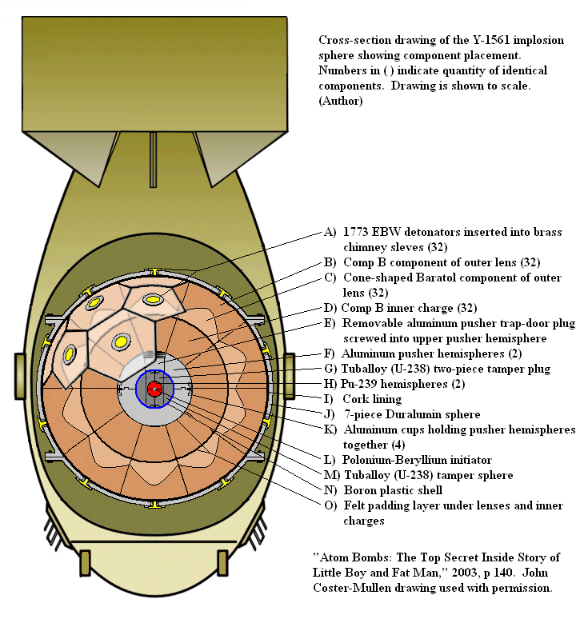

The Implosion Concept
Unlike the simpler "Little Boy" bomb that fired one piece of uranium into another, the "Fat Man" device had to solve a much harder problem. Its plutonium core was so reactive that a gun-type design would fizzle. The only solution was to squeeze the core from all sides at once with unimaginable force—a concept called implosion.

Think of it like an onion. The outer layers are the aerodynamic casing and radar antennas for detonation. Deeper inside, you find the trigger mechanism. But the real genius is in the spherical "physics package" at the very center.
This sphere contains 32 precisely shaped explosive lenses. When they all fire in the same microsecond, they create a perfectly symmetrical shockwave that travels inward, crushing the uranium tamper and, finally, the plutonium core. That massive, uniform pressure is what kicks off the chain reaction.
The Physics Package
This cross-section gives us a clearer look at the heart of the device. The main innovation lies in the explosive "lenses." To create a perfectly uniform implosion, scientists used two types of explosives: a fast-burning one (Composition B) and a slow-burning one (Baratol).

By shaping these materials perfectly, they could turn the chaotic outward force of a normal explosion into a focused, inward-crushing force. This shockwave squeezes the plutonium-239 core (H) from all sides, causing it to go "supercritical." To ensure the reaction starts at the perfect moment, an initiator (L) in the very center releases a burst of neutrons, acting like a sparkplug to start the unstoppable nuclear fission.